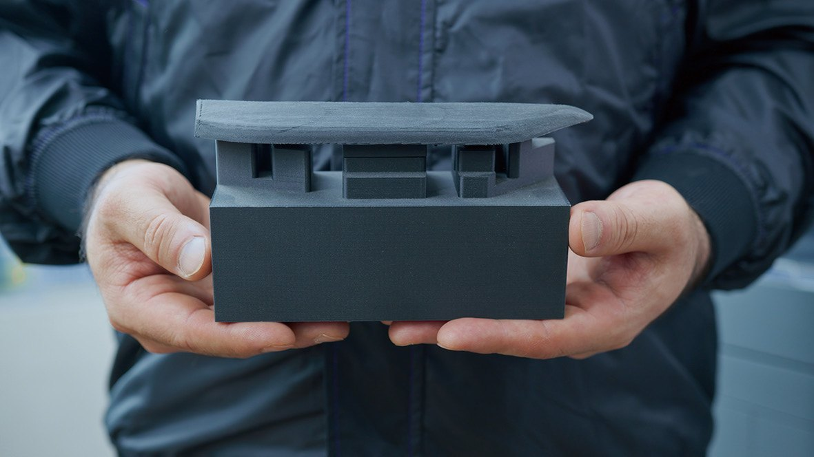

Greater China

你能自己做嗎？
重點摘要
- 8 到 10 月三起案件查到的都是電子件：晶片、飛控板與鏡頭，而且無人機都已交到軍方手上，其中一起是軍方驗收拆檢才發現。查核只會更嚴，合格料源會更少，任何一家供應商出狀況都可能讓產線停下來。
- 3D 列印做不出晶片。它能收回廠內的，是機體結構件、夾治具與停產備品：改得最勤、最常臨時外包、交期最難掌握的那一層。
- 各國軍方已經在基地內重做停產零件，把兩到三週的補給縮成幾小時；台灣的 ASTER-SWARM 機體從改版、維修到量產都在台灣完成。導入的第一步，是到廠走一次產線，找出值得收回來的零件。
這兩個月被移送偵辦的三起軍用無人機案，沒有一架是在文件審查被擋下的：三家廠商的無人機都已交到軍方手上。契約寫明不得使用大陸地區產製的產品，其中一家還附上了不實的產地證明；台中那一起，是軍方驗收時為求謹慎拆開機身，看到晶片上印著「CN」，才報請檢方偵辦。對整個產業來說，這代表接下來每一顆料都要經得起拆開檢查，經得起的料源只會更少；料源越少，任何一家供應商停產、延誤或被取消資格，你的產線就越容易跟著停。
晶片靠合格供應商把關。
機身、治具與備品，可以收回自己廠裡做。
NEWS · 這兩個月發生的事
三家廠商、三個地檢署，查到的都是電子件
8 月到 10 月，至少三家廠商因為把陸製晶片、飛控板或鏡頭裝進交給國軍的無人機，分別遭橋頭、桃園、台中地檢署偵辦，其中兩家已有創辦人與總經理遭羈押（聯合報，10 月 29 日）。這些都還是偵查中的指控，尚未經法院認定。
政策並沒有因此鬆動。副總統今年 1 月在嘉義表示，政府的無人機產製與採購，無論軍方或公部門，都必須達到百分之百非紅供應鏈（中時新聞網）。預算、訂單與政策同時往前推，查核只會越來越嚴。
查核變嚴，最先感受到的是採購與產線。每一家供應商、每一個料號都要拿得出證明，拿不出來的就得換掉；換一家供應商要重新詢價、重新驗來源、重新排產能，這段時間產線只能等。這幾起案件因此帶出合規以外的第二個問題：外部料源出狀況的時候，哪些零件你能在自己廠裡做出來。
BOUNDARY · 先講清楚做不到什麼
一架無人機的三層零件，3D 列印接得住其中兩層
先講界線。這三起案件出問題的晶片、飛控板與鏡頭，3D 列印做不出來；電子層的韌性，要靠合格供應商、產地追溯與安全庫存。工業級 3D 列印能接手的，是另外兩層。
結構層與產線層的共同點是量小、改得勤、交期急。機臂加長、換一顆馬達、某個料號停產，結構件與治具就得跟著改；外包加工要重新開料、重新排程，等待的時間常常比設計本身還長。
Markforged 亞太區副總裁 Richard Elving 今年 10 月在澳洲 Land Forces 國防展的高管圓桌上，把這個範圍講得很節制：增材製造印不出整個平台，它的位置在持續維護，也就是製作關鍵零件與臨時替換件；對在場的製造商來說，適合改用列印的零件可能只占產品的百分之一到百分之五（Markforged 媒體中心報導）。比例不高，但產線停下來的時候，等的往往就是這幾件。
SUSTAINMENT · 停產與等貨
停產零件在基地內重做，兩到三週的補給縮成幾小時
料源出狀況，最常見的有兩種。第一種是零件停產、原廠不再供貨，只能重新找一家供應商開模或加工。美國陸軍一處訓練基地就遇過：車輛上的艙口塞停產，重新製作一個約 1 萬美元、交期三個月；基地改以 Markforged 印表機用 Onyx 複合材料在基地內列印，成本約 230 美元，原本十個零件的設計也簡化成四個（Markforged 官方案例）。
第二種是零件買得到，但遠在補給線的另一端。美韓聯合演習 CJLOTS 26 期間，美軍陸戰隊在配備 Markforged Mark Two 的遠征製造方艙 X-FAB 裡，逆向工程並列印艇用濾網，不到半天完成，原本兩到三週的補給縮成幾個小時（DVIDS）。


兩種情況的解法相同：零件的來源從一家外部供應商，換成場內一台已經驗過的設備、一份設計檔和一批有紀錄的材料。對要守非紅的廠商來說，這也代表外部要追溯的料號少了一個。
REVISION · 改版速度
海外買家要的改版速度，外包加工跟不上
出口市場在意的是另一件事。捷克今年第一季成為台灣無人機最大出口市場，但捷克投資局的說法是，歐洲採購目前把非紅當成偏好，還不是硬性規定；在烏克蘭前線，買家看的仍是數量、價格與交期（科技新報）。同一篇報導裡，烏克蘭國民警衛隊的聯絡官舉了一個例子：
改版速度取決於最慢的那個零件。結構件與治具仰賴外部加工，每改一次就要重新排一次隊；放在廠內列印，改完設計最快當天就能出件。國軍要的是一年後、改了三版之後依然非紅，海外買家要的是改版跟得上戰場，兩邊都要求改版之後很快交得出合格零件。
CASE · 台灣的例子
ASTER-SWARM：FPV 無人機機體不再仰賴進口碳板
艾斯特物聯科技的 ASTER-SWARM 是一次性使用的 FPV 攻擊無人機。FPV 機體要在數秒內完成全油門加速、急轉與俯衝，一般線材列印的機體在這種負載下會撓曲、共振，甚至沿層線開裂；業界常見的另一條路是 CNC 碳板機架，強度足夠，但仰賴進口碳纖板材與外部加工，設計每改一次就要重新開料、等待交期（Markforged 媒體中心案例）。

- 仰賴進口碳纖板材
- 外部加工，每改一次重新開料、等交期
- 跟不上原型迭代，也不利自主供應鏈
- Onyx 外形＋連續碳纖維沿受力路徑鋪設
- 五個標準化模組，改版只更新一個模組的檔案
- 損壞只重印單一零件，可在現地更換
艾斯特改用 Markforged X7 Field Edition 列印全部機體結構件：以 Onyx 列印外形，在機臂根部、馬達座等受力路徑嵌入連續碳纖維。機體拆成上蓋、主架、連接柱、前罩與任務模組介面五個標準化模組，損壞時只重印單一零件，改版時只更新單一模組的檔案；同一套機體加裝螺旋槳護罩就成為訓練機，訓練中損壞的零件可以在現地重印。
原型機已完成起飛與高速飛行功能測試，並通過蒲福風級九級抗風測試（平均風速每秒 20.8 到 24.4 公尺），結果經第三方量測驗證。機體的設計、列印與組裝全數在台灣完成，不必外購碳板機架，也不必委外加工。
「一般 3D 列印的機體，飛得快就會晃、會裂。導入 Markforged 的連續碳纖維列印後，我們第一次能用 3D 列印做出真正撐得住高速飛行的機體。加上模組化設計，ASTER-SWARM 從改版、維修到量產都能在台灣自己完成，這正是自主國防最需要的能力。」
SECURITY · 設計資料
零件在現場做，設計檔留在自己的控制之下
零件收回廠內，資料安全要一起規劃：設計檔外流，等於讓別人也做得出同一個零件。Project Convergence 22 期間，英國陸軍皇家電子機械工兵（REME）接收美軍傳來、自家供應鏈拿不到的備件檔案，在現場以移動式列印機印出交給美軍使用，整個過程跨國傳遞的只有檔案（Mark3D 影片）。
檔案在傳遞過程中也要受保護。美國陸軍 IBAS 計畫第一階段金額 750 萬美元，由 Automation Alley 主導、NCDMM 為主承包商，Markforged 與 Fraunhofer USA 為合作夥伴，驗證受智慧財產保護的製造指令能安全串流到分散各地的列印設備（PR Newswire）。


在廠內使用時，資料由自己的權限管理。Markforged 取得 ISO/IEC 27001:2022 認證（有效至 2028 年 12 月）與 CSA STAR Level 1，資料在傳輸與儲存時皆加密，並委由第三方做滲透測試與安全設計審查，也支援雙因素驗證與單一登入（ISO 27001 證書、原廠資安說明）。
FACTORY · 產線上的第一步
整機廠導入，第一批通常是夾治具
機體以外，產線本身也有一層常被忽略的零件。無人機整機廠與一階供應商換型頻繁，夾治具、檢具與防呆板每次換型都要跟著換，長年和工件搶同一條 CNC 排程。日本 Yamaha Fine Technologies 把產線治具改用 X7 在廠內自製後，治具交期由約 7 天縮短為 1 天、最快當天交件，製作成本降到原本的約 25%，X7 一年運轉約 2,000 小時（Markforged 官方客戶案例）。

治具不上機體、不出貨，導入風險最低，也最快看得到數字，適合當作第一批。累積出強度與尺寸的數據之後，再延伸到結構件與備品。
WHY MARKFORGED · 設備本身也要經得起查
零件收回廠內，設備與材料的來源要先說得清楚
零件從外部供應商收回廠內之後，要追溯的對象就從一家家供應商，變成場內的設備、軟體與材料。Markforged 是美國公司，設備、軟體與材料 100% 非紅；連續碳纖維的拉伸強度達 800 MPa，強化後的零件可以取代部分機械加工的鋁件與支架，停產的金屬支架也因此多了在廠內重做的選項。
已經有工廠的整機廠與一階供應商，用的是產線型號 X7、FX10 與 FX20；要帶到演訓場、前進基地或沒有工廠的現場，則是 X7 Field Edition：

- 整機收納於 Pelican 強固運輸箱，兩人即可搬運；開箱到開始列印不到 3 分鐘
- 功耗 150 W，可由發電機供電
- 納入美軍執行的 MIL-STD-810 測試（美國國防部列裝計畫）
- 作業系統符合 STIG；另有無 Wi-Fi 版本與離線版軟體，供保密場域使用
CONCLUSION · 現在就能做的一件事
列出過去一年讓產線等最久的十個零件
挑一架現役機型，把過去一年讓產線等最久的十個零件列出來，每一個標上類別、外包交期、這一年改了幾版，以及原廠是否還在供貨。
電子件交給供應鏈管理；結構件、治具與備品裡，外包交期以週計、一年改版兩次以上，或已經找不到原廠的，就是第一批該收回廠內做的零件。
預約 Markforged 到廠走產線
Markforged 工程團隊會和你的產線、品保與設計人員一起走一次現場，從實際零件裡找出適合改在廠內列印的那一批，並把成本、交期與改版週期的差距算出來。先填下面的到廠盤點需求，交卷後會看到建議優先盤點的範圍。
- 到廠走產線：逐一看卡住生產的結構件、治具與備品
- 樣件試印：挑兩三個零件用連續纖維列印，帶回產線對照
- 效益試算：外包與廠內列印的成本、交期與改版週期比較
- 離線部署：設計檔不能離開廠區時的設備與軟體配置
SELF-CHECK · 到廠盤點前的自我檢核
無人機產線生產韌性自我檢核
11 題，約兩分鐘。交卷後立即顯示建議到廠優先盤點的範圍與優先程度；我們會在 3 個工作天內與您聯繫，安排到廠走產線的時間。
- 聯合報（2026-10-29）：非紅供應鏈再破功！涉用陸製晶片供軍方
- 中時新聞網（2026-01-28）：副總統參訪嘉義亞洲無人機 AI 創新應用研發中心
- 工商時報（2026-02-15）：442 億砸下去！台灣無人機起飛？「非紅供應鏈」成最大關鍵字
- 科技新報（2026-10-24）：「非紅」標籤只是加分，台灣無人機突圍須先擠進大廠供應鏈
- Markforged 媒體中心（2026-10-07）：Land Forces 2026 國防製造高管圓桌
- Markforged 官方案例：United States Army
- DVIDS（美國國防部）：Advanced manufacturing supports joint and bilateral readiness at CJLOTS 26, South Korea
- Markforged 媒體中心案例：艾斯特物聯科技 ASTER-SWARM
- Mark3D 影片：British Army is utilizing Markforged
- PR Newswire：Automation Alley awarded contract to advance secure distributed additive manufacturing
- Markforged 官方客戶案例：Sophisticated Production Systems With Yamaha Fine Technologies
- Markforged ISO/IEC 27001:2022 證書
- Markforged 官方資安說明（Security）
- Markforged 官方產品頁：X7 Field Edition